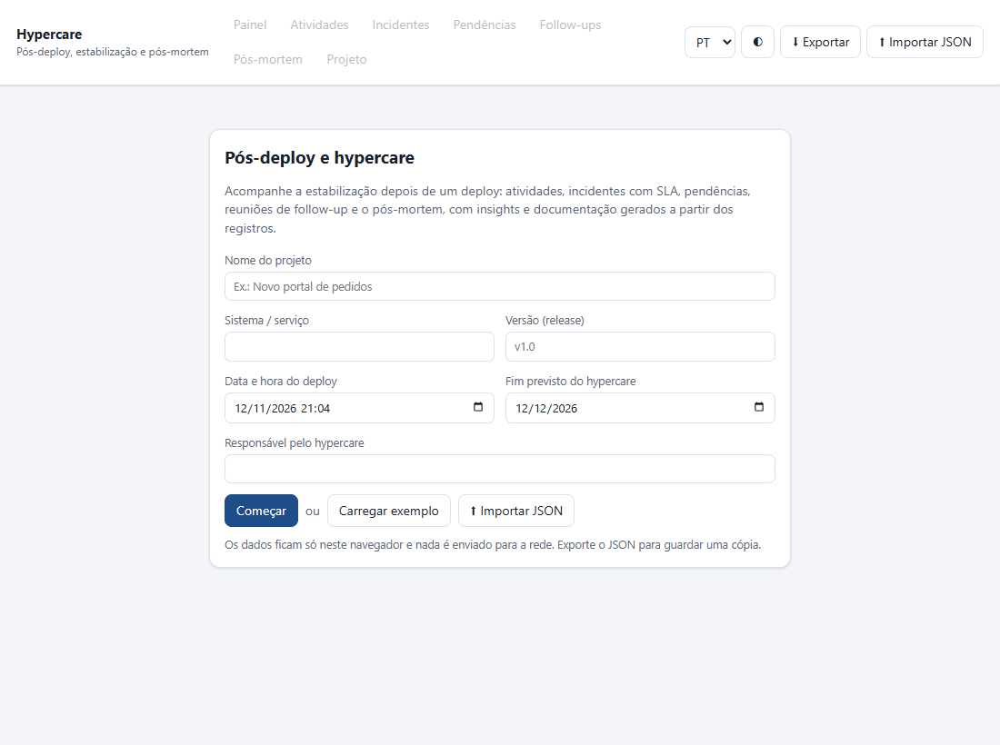
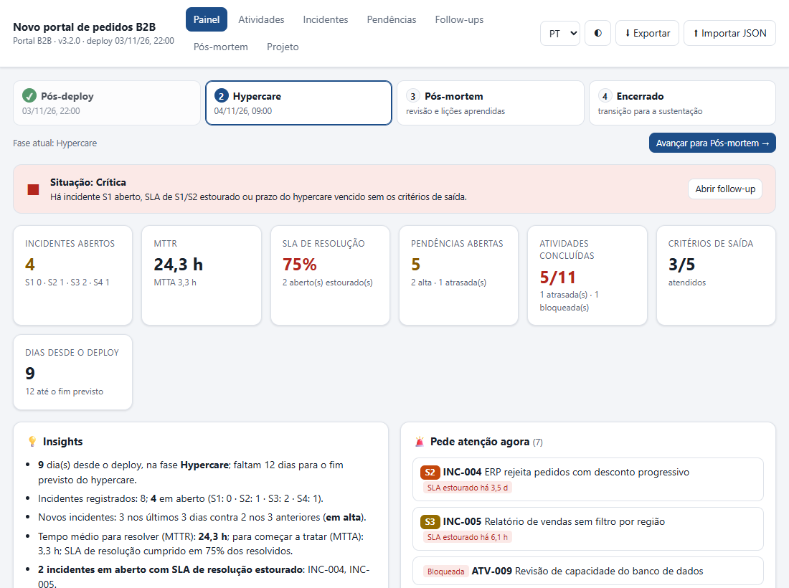
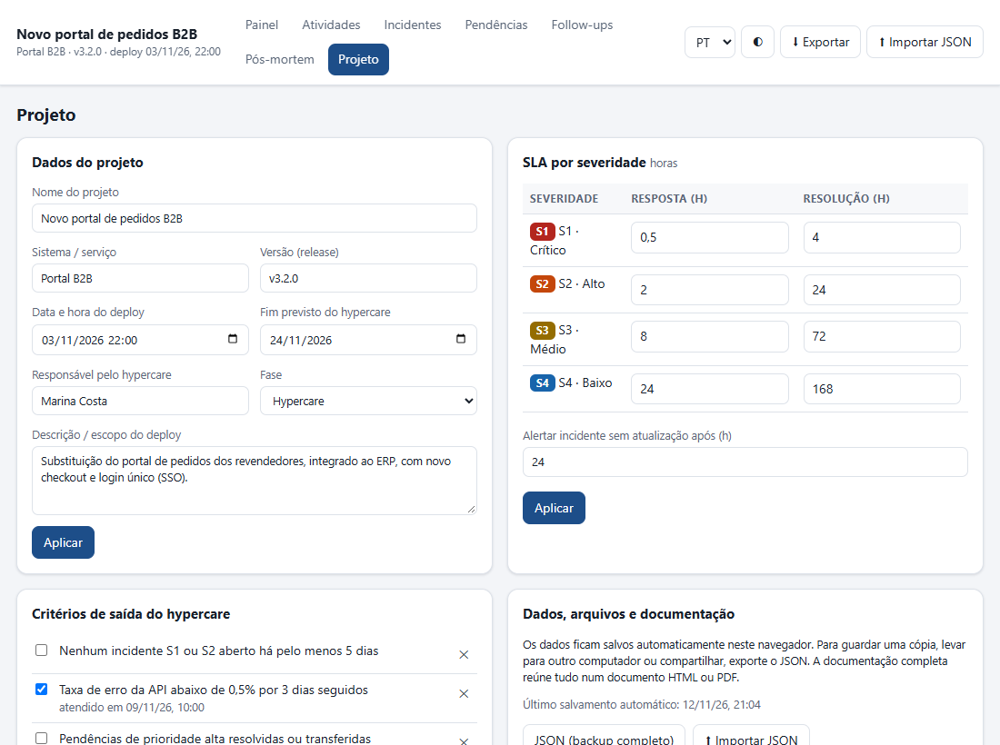
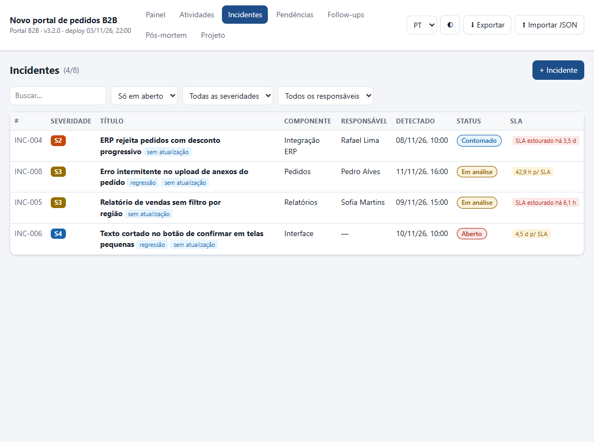
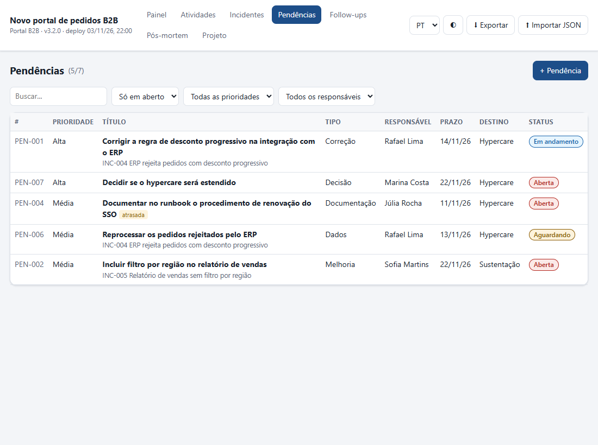
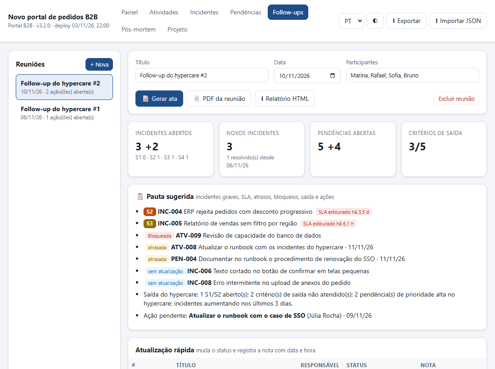
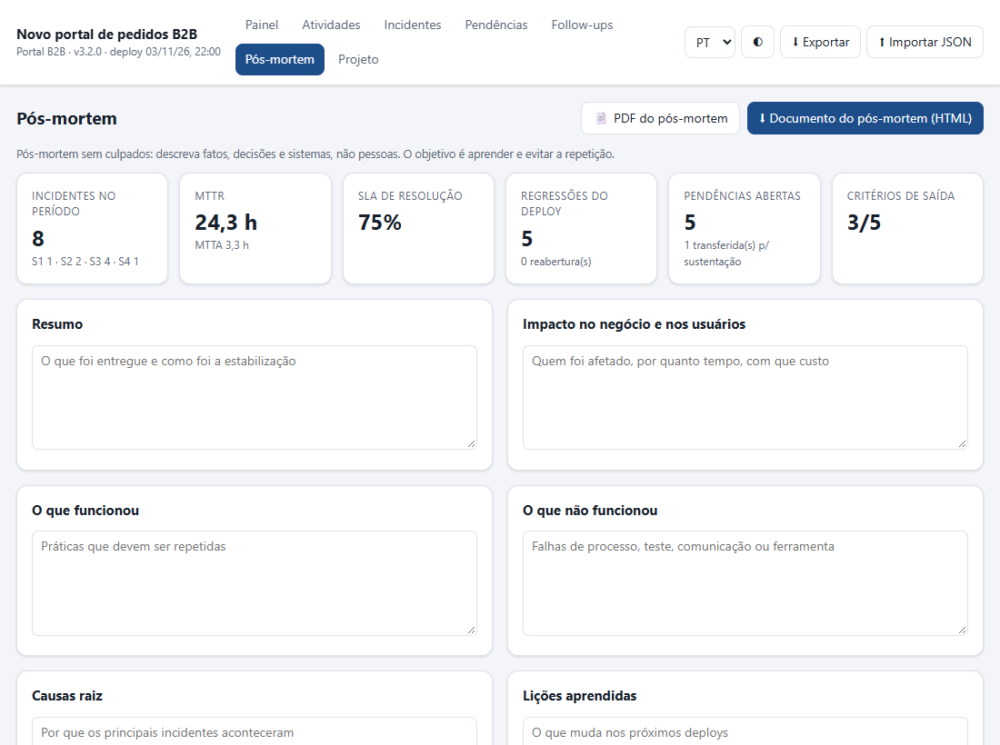
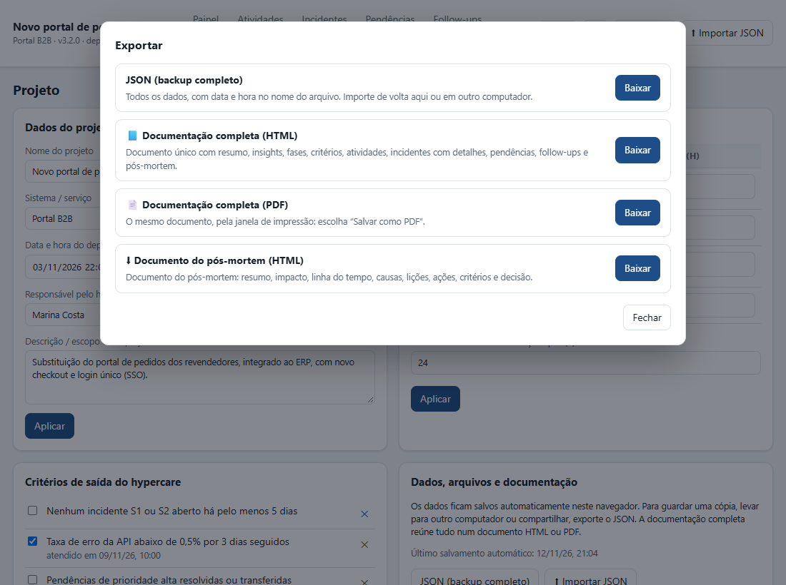

O que é o app Hypercare
O deploy terminou, o sistema novo está no ar, e começa a parte que ninguém vê no cronograma: conferir se tudo funciona em produção, atender os primeiros chamados, corrigir o que escapou dos testes e decidir quando a equipe do projeto pode entregar o sistema para a sustentação. Esse período de suporte reforçado e com prazo definido se chama hypercare. [4] [5]
O app Hypercare organiza esse período em um único arquivo HTML. [1] Você registra as atividades do pós-deploy, os incidentes com severidade e SLA, as pendências que ficaram para depois e as reuniões de follow-up. O app calcula tempos de resposta e de resolução, aponta o que pede atenção, sugere a pauta da reunião, diz se já dá para encerrar o hypercare e monta o pós-mortem e a documentação.

Como o app trata os seus dados
- Os dados ficam no navegador. Cada alteração é salva sozinha no armazenamento local do navegador, no mesmo computador. Não há botão Salvar.
- Nada vai para a rede. O app não usa servidor, conta nem biblioteca externa, e bloqueia conexões pela política de segurança do próprio arquivo.
- Cópia e troca são por JSON. Para guardar uma versão, levar para outro computador ou passar para um colega, exporte o JSON e importe do outro lado.
- Quatro idiomas. A interface está em português, inglês, italiano e espanhol. Troque no seletor do topo. Um link que termina em
#en,#itou#esjá abre no idioma. - Tema claro e escuro. O botão ◐ alterna o tema, e o app lembra a escolha.
Conceitos em cinco minutos
As quatro fases
O app acompanha o projeto em quatro fases. Você avança de uma para a outra com o botão Avançar para … → no Painel, e o app grava a data e a hora de cada mudança.

| Fase | Pergunta que ela responde | O que você faz no app |
|---|---|---|
| Pós-deploy | O sistema subiu e está funcionando? | Marca o checklist de atividades: smoke tests, alertas, comunicação, rollback, rotinas da primeira noite. |
| Hypercare | O sistema está estável o bastante para a sustentação? | Registra e trata incidentes, cuida das pendências, faz os follow-ups, acompanha os critérios de saída. |
| Pós-mortem | O que aprendemos e o que muda no próximo deploy? | Preenche a revisão sem culpados, define ações de melhoria e registra a decisão. |
| Encerrado | Quem cuida a partir de agora? | Gera a documentação final e guarda o JSON. |
Atividade, incidente e pendência
São três tipos de registro, e confundir um com o outro é o erro mais comum.
- Atividade é trabalho planejado: algo que se sabia que precisava ser feito, como “Executar smoke tests em produção”. Tem fase, responsável, prazo e status (a fazer, em andamento, bloqueada, concluída, não se aplica).
- Incidente é algo que não deveria ter acontecido: erro, lentidão, dado errado. Tem severidade, horários e SLA. O relógio começa na detecção.
- Pendência é algo que ficou para resolver e que não está interrompendo ninguém agora: uma melhoria, um ajuste de configuração, uma documentação, uma decisão. Tem tipo, prioridade, prazo e destino (resolver no hypercare ou transferir para a sustentação). Uma pendência pode nascer de um incidente.
Severidade e SLA
Cada incidente recebe uma severidade de S1 (crítico) a S4 (baixo), e cada severidade tem dois prazos: o de resposta (até alguém começar a tratar) e o de resolução. Os valores abaixo são o padrão do app, e você pode mudá-los na aba Projeto para refletir o acordo da sua organização. Eles são um ponto de partida, não uma norma.
| Severidade | Resposta (h) | Resolução (h) | Exemplo |
|---|---|---|---|
| S1 · Crítico | 0,5 | 4 | Ninguém consegue fechar pedidos. |
| S2 · Alto | 2 | 24 | Uma função importante falha para parte dos usuários. |
| S3 · Médio | 8 | 72 | Um relatório sai sem um filtro; há contorno. |
| S4 · Baixo | 24 | 168 | Texto cortado em um botão. |
O ciclo de vida de um incidente, MTTA e MTTR
![Estados em sequência: Aberto, Em análise, Contornado, Resolvido e Fechado. Ao sair de Aberto, o app grava o início do tratamento; ao chegar a Resolvido, grava a resolução. Uma seta volta de Resolvido para os estados ativos: é a reabertura (Aberto, Em análise ou Contornado), que apaga a hora de resolução e conta uma reabertura. Embaixo, as medidas: tempo de resposta, da detecção ao início do tratamento, comparado ao SLA de resposta; e tempo de resolução, da detecção à resolução, comparado ao SLA de resolução. As médias são o MTTA e o MTTR.](rc_images/HypercareIncidenteCiclo.svg)
Quando o status sai de Aberto, o app preenche o início do tratamento. Quando chega a Resolvido ou Fechado, preenche a resolução. Você também pode digitar esses horários no formulário, por exemplo para registrar um incidente que aconteceu de madrugada.
Com esses horários o app calcula duas médias. O MTTA (mean time to acknowledge) é o tempo médio entre a detecção e o início do tratamento. O MTTR é o tempo médio entre a detecção e a resolução. A sigla MTTR tem vários significados no mercado (recuperar, reparar, responder, resolver), por isso vale dizer qual se usa. [3] Neste app, MTTR é sempre da detecção à resolução.
Critérios de saída
O hypercare termina quando condições combinadas antes são atendidas, e não só quando acaba o prazo. [5] [6] Um projeto novo já começa com quatro critérios, que você pode editar: nenhum S1 ou S2 aberto há pelo menos 5 dias; pendências de prioridade alta resolvidas ou transferidas; monitoramento e alertas validados em produção; equipe de sustentação treinada e com runbook.
Pós-mortem sem culpados
O pós-mortem registra o que aconteceu, o impacto, as causas e as ações para que não se repita. Ele é sem culpados (blameless): procura as causas no processo, nos sistemas e nas decisões, sem acusar pessoas, porque quem teme punição esconde informação. [2] O app traz esse lembrete no topo da aba Pós-mortem.
↑ Voltar ao topoPasso a passo
O roteiro abaixo cobre um hypercare inteiro, do deploy ao encerramento. Se quiser só conhecer o app, faça o passo 1 e passeie pelas abas.
Passo 1. Conheça o app com o exemplo
- Abra o app e clique em Carregar exemplo.
- O app carrega o projeto fictício “Novo portal de pedidos B2B”, com deploy nove dias antes da data de hoje, 8 incidentes, pendências, atividades, dois follow-ups e critérios de saída. As datas acompanham o dia em que você abre o exemplo.
- Passeie pelas abas. Quando terminar, vá em Projeto → Apagar todos os dados para começar o seu.

Passo 2. Comece o seu projeto
- Na tela inicial, preencha Nome do projeto, Sistema / serviço, Versão, Data e hora do deploy, Fim previsto do hypercare e Responsável pelo hypercare.
- Clique em Começar. O projeto nasce na fase Pós-deploy, com quatro critérios de saída e cinco atividades de pós-deploy, todas a fazer, com prazo no dia seguinte ao deploy.
Passo 3. Ajuste SLA e critérios de saída
- Abra a aba Projeto. Em SLA por severidade, troque os prazos de resposta e de resolução, se o seu acordo for outro, e clique em Aplicar.
- No mesmo quadro, ajuste Alertar incidente sem atualização após (h). O padrão é 24 horas.
- Em Critérios de saída do hypercare, apague o que não serve com ×, escreva novos critérios no campo e clique em + Critério. Bons critérios são verificáveis: “taxa de erro da API abaixo de 0,5% por 3 dias seguidos” é melhor que “sistema estável”.

Passo 4. Execute o checklist do pós-deploy
- Abra a aba Atividades. As cinco atividades padrão estão lá.
- Clique em uma atividade para abrir o formulário. Preencha o responsável, ajuste o prazo e troque o status para Em andamento ou Concluída. Clique em Salvar.
- Para incluir outra, use + Atividade. Escolha a fase: atividades de hypercare também cabem aqui, como “Atualizar o runbook com os incidentes do hypercare”.
- Se algo impede o avanço, marque Bloqueada: o item vai para “Pede atenção agora” no Painel e entra na pauta do follow-up.
- Com o checklist feito, volte ao Painel e clique em Avançar para Hypercare →. Confirme. A data e a hora ficam na linha das fases.
Passo 5. Registre um incidente
- Abra a aba Incidentes e clique em + Incidente.
- Preencha o Título de forma que qualquer pessoa entenda (“ERP rejeita pedidos com desconto progressivo”), a Severidade, o Componente, o Responsável e o Detectado em, que é a hora em que o problema foi percebido, não a hora em que você está digitando.
- Marque Regressão causada pelo deploy se algo que funcionava deixou de funcionar com a versão nova.
- Descreva o problema e, se houver, o Contorno (workaround). Clique em Salvar.
Passo 6. Trate e resolva o incidente
- Na lista de incidentes, clique na linha (ou use Tab até ela e tecle Enter).
- Troque o status para Em análise. Escreva no campo Nova atualização o que mudou e o próximo passo. Salve. A nota vai para o Histórico com data e hora.
- Se encontrar um contorno, use Contornado: o usuário consegue trabalhar, mas a causa ainda não foi corrigida.
- Quando corrigir, preencha Causa raiz e Solução, troque para Resolvido e salve. Depois da confirmação do usuário, use Fechado.
- Se o problema voltar, volte o status para um estado ativo. O app apaga a hora de resolução, marca o incidente como reaberto e conta a reabertura no pós-mortem.

Passo 7. Registre pendências
- Abra a aba Pendências e clique em + Pendência.
- Escolha o Tipo (correção, melhoria, configuração, dados, documentação, treinamento, decisão), a Prioridade e o Destino: Hypercare, se precisa ser resolvida antes de encerrar, ou Sustentação, se pode ficar para a equipe que assume depois.
- Em Incidente de origem, ligue a pendência ao incidente que a criou, se houver. Assim o pós-mortem mostra de onde veio cada pendência.
- Ao passar o item para a equipe de sustentação, use o status Transferida p/ sustentação: ele sai da contagem de abertas e aparece no pós-mortem como transferido.

Passo 8. Conduza a reunião de follow-up
- Abra a aba Follow-ups e clique em + Nova. Ajuste o título, a data e os participantes.
- Os indicadores do topo comparam com a reunião anterior: 3 +2 quer dizer 3 incidentes abertos, 2 a mais que no último follow-up.
- Siga a Pauta sugerida: incidentes graves e com SLA estourado, itens bloqueados e atrasados, incidentes sem atualização, situação dos critérios de saída e ações pendentes de reuniões anteriores.
- Em Atualização rápida, troque o status de cada item ali mesmo e escreva a nota no campo ao lado. A nota é salva ao teclar Enter e vai para o histórico do item.
- Escreva as Anotações e as Decisões (uma por linha). Em Ações, use + Ação para registrar o que será feito, por quem e até quando.
- Ao final, clique em 📝 Gerar ata para copiar ou baixar o texto, em 📄 PDF da reunião para salvar o PDF pela janela de impressão, ou em ⬇ Relatório HTML.

Passo 9. Decida se o hypercare pode terminar
- Na aba Projeto, marque os critérios de saída já atendidos. O app grava a data de cada um.
- No Painel, leia o último item dos Insights. Ele diz “Pronto para encerrar o hypercare” ou lista o que falta.
- Com o critério atendido e a concordância de quem responde pelo sistema, clique em Avançar para Pós-mortem →.
Passo 10. Escreva o pós-mortem
- Abra a aba Pós-mortem. Os indicadores do topo já estão calculados: incidentes no período, MTTR, SLA, regressões, pendências e critérios.
- Preencha Resumo, Impacto no negócio e nos usuários, O que funcionou, O que não funcionou, Causas raiz e Lições aprendidas. O texto é salvo ao sair de cada campo.
- Confira a Linha do tempo, montada sozinha com o deploy, as mudanças de fase, os incidentes e as resoluções.
- Registre as Ações de melhoria com responsável e prazo.
- Escolha a Decisão: encerrar o hypercare, estendê-lo até uma data ou reverter o deploy. Escreva a justificativa e a aprovação.
- Gere o 📄 PDF do pós-mortem ou o ⬇ Documento do pós-mortem (HTML) e circule.

Passo 11. Encerre e guarde
- No Painel, clique em Avançar para Encerrado →.
- Em ⬇ Exportar, baixe a 📘 Documentação completa (HTML) ou a versão em PDF, e o JSON (backup completo). Guarde os dois junto com a documentação do projeto.
Em resumo
- Antes: projeto, SLA e critérios de saída.
- Durante: atividades, incidentes com atualização, pendências com destino, follow-up com pauta e ações.
- Depois: critérios atendidos, pós-mortem sem culpados, documentação e JSON.
As abas do app
| Aba | Para que serve | Destaques |
|---|---|---|
| Painel | Ver a situação de relance. | Fases, situação (estável, atenção, crítica), indicadores, insights, “Pede atenção agora”, gráfico diário e incidentes por componente. |
| Atividades | Trabalho planejado. | Filtros por fase, status e responsável; atrasadas e bloqueadas em destaque. |
| Incidentes | Problemas em produção. | Severidade, SLA na lista, histórico de atualizações, regressão, reabertura, sem atualização. |
| Pendências | O que ficou para resolver. | Tipo, prioridade, prazo, destino e incidente de origem. |
| Follow-ups | Reuniões de acompanhamento. | Pauta sugerida, comparação com a reunião anterior, atualização rápida, ata, PDF, relatório. |
| Pós-mortem | Revisão final. | Indicadores, linha do tempo automática, ações de melhoria, decisão e aprovação. |
| Projeto | Configuração e arquivos. | Dados, SLA, alerta de atualização, critérios de saída, exportar, importar, documentação, apagar dados. |
Teclado: as setas ← e → trocam de aba quando o foco está na barra de abas; Enter abre a linha da lista em foco; Esc fecha o formulário.
↑ Voltar ao topoComo ler o painel
A situação: estável, atenção ou crítica
A faixa colorida do Painel resume o momento com regras fixas, que você pode conferir:
| Situação | Quando aparece |
|---|---|
| ■ Crítica | Há incidente S1 aberto; ou um S1 ou S2 aberto estourou o SLA de resolução; ou, na fase Hypercare, o fim previsto passou e nem todos os critérios foram atendidos. |
| ▲ Atenção | Não é crítica, mas há S2 aberto, algum incidente aberto com SLA estourado, atividade ou pendência atrasada, ou atividade bloqueada. |
| ● Estável | Nenhuma das condições acima. |
Pronto para encerrar?
Nas fases Pós-deploy e Hypercare, o último insight diz se o hypercare pode terminar. O app só diz “pronto” quando tudo isto vale ao mesmo tempo:
- nenhum incidente S1 ou S2 aberto;
- pelo menos um critério de saída cadastrado, e todos atendidos;
- nenhuma pendência de prioridade alta aberta com destino Hypercare;
- os incidentes detectados nos últimos 3 dias não superam os dos 3 dias anteriores.
Se faltar algo, ele lista os motivos. O app não avança de fase sozinho: a decisão é das pessoas.
Os insights
Os insights são frases montadas com os registros: dias desde o deploy e até o fim previsto, total e abertos por severidade, tendência dos últimos 3 dias, MTTR, MTTA e SLA cumprido, incidentes com SLA estourado, dias sem S1 ou S2, componente que concentra incidentes, regressões, reaberturas, incidentes sem atualização, pendências, atividades, pessoas com quatro ou mais itens abertos, critérios e ações em aberto.
Como interpretar os números
- MTTR alto com poucos incidentes costuma vir de um caso longo. Abra a lista e veja qual puxa a média.
- Componente com metade dos incidentes pede uma conversa com quem cuida dele, e talvez uma pendência de melhoria.
- Muitas regressões apontam para os testes antes do deploy. É assunto para o pós-mortem.
- Muitos “sem atualização” indicam que os incidentes estão parados ou que ninguém está registrando o andamento. Os dois casos merecem atenção.
- Incidentes em alta no fim do prazo são o sinal mais forte para estender o hypercare.
O SLA cumprido é calculado só sobre incidentes já resolvidos. Os abertos com prazo estourado aparecem à parte, no indicador e em “Pede atenção agora”.
↑ Voltar ao topoBoas práticas e erros comuns
Boas práticas
- Combine os critérios de saída antes do deploy. Discutir critério com o sistema já no ar vira negociação de prazo. [5] [6]
- Registre a hora real da detecção. Lançar o incidente horas depois, com a hora do lançamento, faz o SLA parecer melhor do que foi.
- Uma atualização por dia, no mínimo, em todo incidente aberto. O alerta “sem atualização” ajuda a lembrar.
- Follow-up curto e frequente. Diário na primeira semana, depois conforme a tendência. Use a pauta sugerida e feche cada reunião com ações que tenham responsável e prazo.
- Exporte o JSON ao fim de cada dia. Os dados vivem no navegador; o JSON é a sua cópia.
Erros comuns
“Registro tudo como incidente.”
Melhorias e dúvidas viram pendências. Incidente demais distorce o MTTR e esconde os problemas reais.
“Classifico tudo como S1 para ser atendido mais rápido.”
Quando tudo é crítico, nada é. A situação do painel fica vermelha o tempo todo e perde o valor de alerta.
“O prazo acabou, então o hypercare acabou.”
O fim previsto é uma data; o encerramento depende dos critérios. Se não foram atendidos, estenda e registre a decisão.
“O pós-mortem é para achar o responsável.”
Um pós-mortem que procura culpados faz as pessoas esconderem informação, e as causas reais ficam sem tratamento. [2]
“Fecho o incidente e abro outro igual.”
Se o problema voltou, reabra o mesmo. Assim a reabertura é contada e o histórico fica inteiro.
Prompts para acelerar o trabalho
Os prompts abaixo usam o que o app produz: a ata, o JSON e os textos dos incidentes. Troque os trechos entre colchetes. Para escrever prompts melhores, veja o tutorial de prompts deste site. [7]
Antes de colar: incidentes e atas costumam ter nomes de clientes, dados de usuários e detalhes de infraestrutura. Troque por dados fictícios e siga a política da sua organização para uso de IA. O app não envia nada para a rede, mas o serviço de IA recebe o que você colar.
1. Critérios de saída para o seu sistema
Vou colocar em produção [descreva o sistema, os usuários e as integrações].
Proponha de 5 a 8 critérios de saída do hypercare.
Cada critério precisa ser verificável, com número e período (ex.: "taxa de erro abaixo de 0,5% por 3 dias seguidos").
Inclua critérios técnicos, de suporte e de negócio.
Para cada um, diga de onde vem o dado e quem confirma.
Não invente valores do meu sistema: quando não souber, escreva [definir].2. Escrever um incidente claro
Abaixo está a descrição de um problema, do jeito que chegou do usuário.
Reescreva para registrar como incidente, com:
- título de até 80 caracteres, que diga o que falha e onde;
- descrição em até 5 linhas: o que acontece, desde quando, quem é afetado, como reproduzir;
- severidade sugerida (S1 a S4) e o motivo, usando esta régua: [cole a régua da sua equipe];
- perguntas que faltam responder.
Não invente fatos que não estejam no texto.
Texto: [cole aqui]3. Resumo executivo a partir da ata
Abaixo está a ata gerada pelo app Hypercare (dados anonimizados).
Escreva um resumo para [diretoria / área de negócio], em até 150 palavras:
situação geral, o que melhorou, o que preocupa, decisões e o que precisamos deles.
Use só os números da ata. Não arredonde nem estime números que não estão lá.
Ata: [cole aqui]4. Rascunho do pós-mortem
Abaixo está o JSON exportado do app Hypercare (dados anonimizados).
Ajude a preparar o pós-mortem sem culpados:
1. Agrupe os incidentes por causa provável e diga quais dados sustentam cada grupo.
2. Proponha textos curtos para "O que funcionou" e "O que não funcionou".
3. Sugira até 5 ações de melhoria, cada uma ligada a um grupo de incidentes.
Descreva processos e sistemas, nunca pessoas.
Marque como [hipótese] tudo o que não estiver nos dados.
JSON: [cole aqui]Confira sempre o que a IA devolver. Os números do app vêm dos registros; os da IA podem ser inventados.
↑ Voltar ao topoDados, exportação e documentos

| Saída | Onde | O que contém |
|---|---|---|
| JSON (backup completo) | ⬇ Exportar; Projeto | Todos os dados, com a data, a hora e o fuso da exportação. O nome do arquivo traz a data e a hora. |
| Documentação completa (HTML ou PDF) | ⬇ Exportar; Projeto | Resumo, insights, fases, critérios, atividades, incidentes com detalhes, pendências, follow-ups e pós-mortem. |
| Documento do pós-mortem (HTML ou PDF) | ⬇ Exportar; Pós-mortem | Resumo, impacto, linha do tempo, causas, lições, ações, critérios e decisão. |
| Ata (.txt), PDF e relatório HTML da reunião | Follow-ups | Indicadores, pauta, atualizações, anotações, decisões e ações daquela reunião. |
Os PDFs usam a janela de impressão do navegador: escolha Salvar como PDF como destino. Os documentos HTML abrem em qualquer navegador e não dependem do app.
Importar
⬆ Importar JSON substitui os dados atuais pelos do arquivo. Exporte antes, se quiser guardar o que está na tela. Arquivos que não são JSON do app são recusados com aviso.
↑ Voltar ao topoLimitações e solução de problemas
- Um projeto por navegador. Para acompanhar dois deploys, use navegadores ou perfis diferentes, ou alterne pelo JSON.
- Não é multiusuário. Duas pessoas não editam o mesmo projeto ao mesmo tempo. Combine quem registra e circule o JSON ou os documentos.
- Não integra com ferramentas de chamados ou de monitoramento. Os incidentes são digitados no app.
- Limpar os dados do navegador apaga o projeto. A navegação anônima também não guarda nada depois de fechada. Exporte o JSON.
- Horários no fuso do computador. Os cálculos usam o relógio e o fuso da máquina. Equipes em fusos diferentes devem combinar a referência.
| Sintoma | Causa provável e solução |
|---|---|
| “O início do tratamento e a resolução não podem ser antes da detecção.” | Algum horário foi digitado antes da detecção. Corrija o campo. |
| “Arquivo inválido: não é um JSON.” | O arquivo não é JSON, por exemplo um PDF ou um CSV. Escolha o .json exportado pelo app. |
| “Este JSON não é um projeto deste app.” | O JSON veio de outro programa, como o Gestor de Projeto. Use um JSON exportado pelo app Hypercare em ⬇ Exportar. |
| O PDF não aparece. | O navegador bloqueou a janela de impressão ou o destino está em uma impressora. Escolha “Salvar como PDF”. |
| Os dados sumiram. | Os dados do site foram limpos, ou o app foi aberto em outro navegador, perfil ou janela anônima. Importe o último JSON. |
| O SLA está estourado, mas o problema foi resolvido. | O status ficou em Contornado ou Em análise. Troque para Resolvido. |
Glossário
| Termo | Significado |
|---|---|
| Blameless (sem culpados) | Forma de pós-mortem que busca causas em processos e sistemas, sem acusar pessoas. |
| Contorno (workaround) | Solução temporária que permite trabalhar enquanto a causa não é corrigida. |
| Critério de saída | Condição verificável, combinada antes, para encerrar o hypercare. |
| Deploy | Colocação de uma versão do sistema em produção. |
| Follow-up | Reunião curta e periódica de acompanhamento. |
| Hypercare | Período, com prazo definido, de suporte reforçado logo depois de uma entrada em produção. |
| Incidente | Interrupção ou degradação não planejada de um serviço. |
| MTTA | Tempo médio entre a detecção e o início do tratamento. |
| MTTR | Neste app, tempo médio entre a detecção e a resolução. |
| Pendência | Item a resolver que não interrompe o serviço agora. |
| Pós-mortem | Revisão escrita do que aconteceu, das causas e das ações para não repetir. |
| Regressão | Algo que funcionava e parou de funcionar com a versão nova. |
| Rollback | Volta para a versão anterior. |
| Runbook | Roteiro de operação: como diagnosticar e resolver situações conhecidas. |
| Severidade | Gravidade do incidente, de S1 (crítico) a S4 (baixo). |
| SLA | Prazo acordado de resposta ou de resolução. |
| Smoke test | Teste rápido das funções principais logo depois do deploy. |
| Sustentação | Equipe ou processo que mantém o sistema depois do projeto. |
Revisão rápida
1. O usuário pede um novo campo no relatório. É atividade, incidente ou pendência?
Pendência do tipo melhoria. Nada está quebrado; é algo a resolver, no hypercare ou na sustentação.
2. Um incidente S2 foi detectado às 10h e resolvido às 16h do dia seguinte. Cumpriu o SLA padrão?
Não. Foram 30 horas, e o SLA padrão de resolução de S2 é 24 horas.
3. O que o app faz quando um incidente resolvido volta para Em análise?
Apaga a hora de resolução, marca o incidente como reaberto e conta a reabertura.
4. O painel está vermelho, mas não há S1 aberto. Por quê?
Um S1 ou S2 aberto estourou o SLA de resolução, ou o fim previsto do hypercare passou sem todos os critérios atendidos.
5. Todos os critérios foram atendidos, mas o app diz que ainda não dá para encerrar. O que olhar?
Os motivos listados: S1 ou S2 aberto, pendência alta com destino Hypercare, ou incidentes em alta nos últimos 3 dias.
6. Como tirar uma pendência alta da conta sem resolvê-la?
Transferindo-a para a sustentação, com acordo de quem recebe: status Transferida p/ sustentação, ou destino Sustentação.
7. Onde fica salvo o projeto, e como levá-lo para outro computador?
No armazenamento local do navegador. Exporte o JSON e importe no outro computador.
8. Qual a diferença entre MTTA e MTTR neste app?
O MTTA mede da detecção ao início do tratamento; o MTTR, da detecção à resolução.
Referências
- Giovani Perotto Mesquita, “Hypercare”, app deste site, giovanipm.github.io/hypercare.html.
- John Lunney e Sue Lueder, “Postmortem Culture: Learning from Failure”, cap. 15 de Site Reliability Engineering, O’Reilly/Google, 2016, acesso em 12/11/2026, sre.google/sre-book/postmortem-culture.
- Atlassian, “Common incident management metrics”, acesso em 12/11/2026, atlassian.com/incident-management/kpis/common-metrics.
- ERP Research, “What is Hypercare?”, glossário de ERP, acesso em 12/11/2026, erpresearch.com/glossary/hypercare.
- Panorama Consulting Group, “ERP Hypercare Checklist to Help You Stabilize Fast”, acesso em 12/11/2026, panorama-consulting.com.
- Eric Klimuk, “What Is Hypercare? Definition, Timeline & Exit Criteria for B2B Support Teams”, Supportbench, 2026, acesso em 12/11/2026, supportbench.com. As referências 4 a 6 são de fornecedores e consultorias, não de norma. Elas concordam que o hypercare tem prazo e termina por critérios combinados, mas divergem na duração típica: de 2 a 8 semanas para a ERP Research, de 2 a 6 semanas para a Supportbench, e “várias semanas”, conforme a complexidade, para a Panorama.
- Giovani Perotto Mesquita, “Tutorial de prompts”, tutorial deste site, giovanipm.github.io/PromptTutorial.html.
![States in sequence: Open, Investigating, Workaround, Resolved and Closed. When it leaves Open, the app records the acknowledgement; when it reaches Resolved, it records the resolution. An arrow goes back from Resolved to the active states: this is a reopening (Open, Investigating or Workaround), which clears the resolution time and counts one reopening. Below, the measures: response time, from detection to acknowledgement, compared with the response SLA; and resolution time, from detection to resolution, compared with the resolution SLA. The averages are MTTA and MTTR.](rc_images/HypercareIncidenteCiclo-en.svg)

![Stati in sequenza: Aperto, In analisi, Aggirato, Risolto e Chiuso. Quando esce da Aperto, l’app registra la presa in carico; quando arriva a Risolto, registra la risoluzione. Una freccia torna da Risolto agli stati attivi: è la riapertura (Aperto, In analisi o Aggirato), che cancella l’ora di risoluzione e conta una riapertura. Sotto, le misure: tempo di risposta, dal rilevamento alla presa in carico, confrontato con lo SLA di risposta; e tempo di risoluzione, dal rilevamento alla risoluzione, confrontato con lo SLA di risoluzione. Le medie sono MTTA e MTTR.](rc_images/HypercareIncidenteCiclo-it.svg)
![Cuatro fases en secuencia. Post-despliegue: verificación inmediata, con smoke tests, monitoreo, comunicación y ventana de rollback. Hypercare: estabilización con soporte reforzado, incidentes con SLA, pendientes y seguimientos. Post-mortem: revisión sin culpables, con línea de tiempo, causas raíz, lecciones y acciones. Cerrado: traspaso a soporte. La salida del hypercare depende de los criterios de salida: ningún S1 o S2 abierto, criterios cumplidos, pendientes altos resueltos e incidentes en baja.](rc_images/HypercareFases-es.svg)
![Estados en secuencia: Abierto, En análisis, Con solución temporal, Resuelto y Cerrado. Al salir de Abierto, el app graba el inicio de la atención; al llegar a Resuelto, graba la resolución. Una flecha vuelve de Resuelto a los estados activos: es la reapertura (Abierto, En análisis o Con solución temporal), que borra la hora de resolución y cuenta una reapertura. Abajo, las medidas: tiempo de respuesta, de la detección al inicio de la atención, comparado con el SLA de respuesta; y tiempo de resolución, de la detección a la resolución, comparado con el SLA de resolución. Los promedios son MTTA y MTTR.](rc_images/HypercareIncidenteCiclo-es.svg)